Resumen
Las relaciones son asociaciones entre entidades de nuestro dominio. A través de TypeORM, NestJS ofrece la posibilidad de definir relaciones para facilitar la combinación y relación de datos entre las tablas de la base de datos. Al definir las relaciones entre entidades, TypeORM se encargará de definir claves ajenas y tablas de relación para relaciones M:N. En este tutorial veremos cómo tratar en una API NestJS con relaciones 1:M y M:N.
-
Crear una API REST funcional con NestJS.
-
Introducir el uso de relaciones
1:M,M:1yM:Nentre entidades. -
Adaptar los DTO para que puedan tratar con datos relacionados.
-
Programar los servicios de interacción con la base de datos para que devuelvan datos relacionados.
|
Disponible el repositorio usado en este tutorial. |
1. Introducción
Las relaciones nos permiten combinar entidades persistentes de nuestro dominio. NestJS utiliza TypeORM como framework de persistencia en bases de datos. TypeORM ofrece decoradores para la creación de relaciones entre entidades (1:M, M:1 y M:N).
En este tutorial crearemos una API REST desde cero comenzando por la creación de las entidades. Posteriormnente, le añadiremos las relaciones de forma paulatina. Usaremos un caso de uso sencillo de libros, que tienen asociados editoriales, comentarios y palabras clave. Este ejemplo servirá como escenario en el que ir aprediendo a tratar con relaciones entre entidades en una API REST en NestJS.
A continuación se muestra el diagrama relacional de la base de datos asociada. Como aclaración:
-
Cada libro puede tener varios comentarios. Cada comentario corresponde a un único libro.
-
Cada libro tiene una editorial. De cada editorial puede haber varios libros.
-
Un libro puede tener varias palabras clave. A cada palabra clave puede haber asociados varios libros.
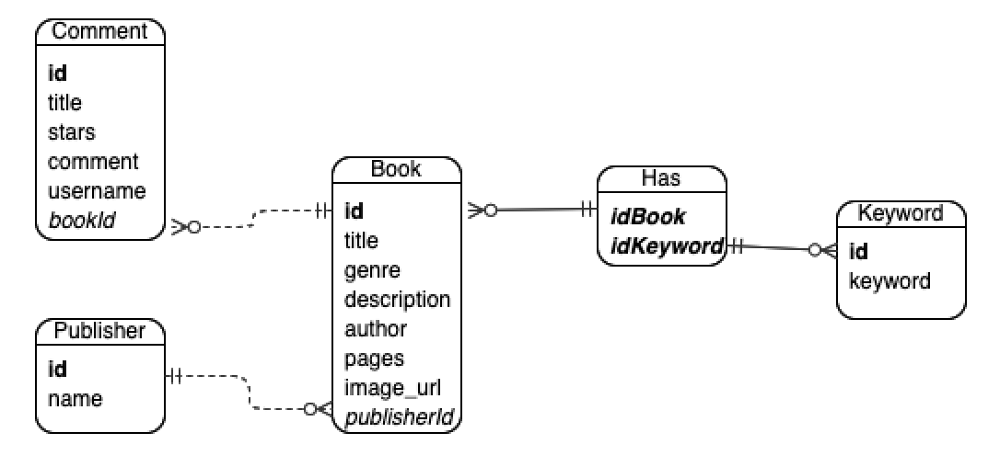
Desde el punto de la aplicación, las clases asociadas a este problema van a persitirse como entidades, las cuales serán gestionadas por TypeORM. A continuación se muestra el diagrama de clases asociado.
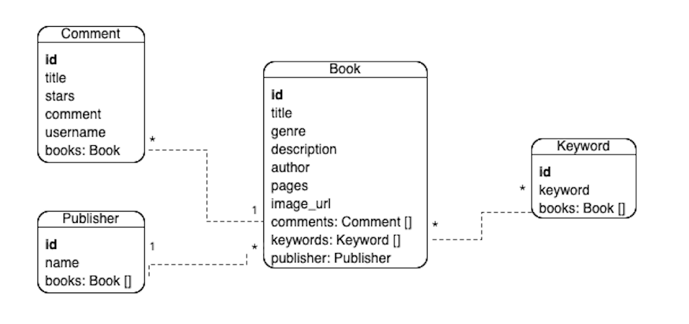
En el diagrama de clases se observa que las relaciones son bidireccionales, ya que cada relación tiene un campo en cada extremo de la relación. Esto permitirá a una entidad acceder a sus entidades relacionadas.
La documentación oficial de TypeORM ofrece información de interés sobre las cuestiones tratadas en este tutorial así como otras no incluidas, como ejemplo de propagación de cambios en claves ajenas (RESTRICT, CASCADE, SET NULL) y gestión de huérfanos.
2. Preparación del entorno
Partimos de un proyecto NestJS en blanco en el que instalamos los paquetes para
-
JWT y Passport
-
TypeORM y MySQL
-
Swagger
Los instalamos con:
$ npm install --save @nestjs/jwt passport passport-jwt @nestjs/passport
$ npm install --save @nestjs/typeorm typeorm mysql
$ npm install --save @nestjs/swagger swagger-ui-express|
Este proyecto usa MySQL como base de datos. Debe existir una base de datos creada previamente denominada |
El proyecto incorpora una configuración preterminada para:
-
JWT en la carpeta
utilities. La comprobación de la legitimidad de los tokens se realiza mediante la comprobación de un secreto inicializado enutilities/jwt.strategy.ts. Está inicializado consecret. Por tanto, los JWT generados para usar en esta aplicación deberán haber sido generados con el secreto inicializado asecret. -
Configuración de TypeORM en el archivo
ormconfig.jsony en la carpertaconfig. -
Variables de entorno de configuración de MySQL en el archivo
.env -
Configuración de Swagger en
main.ts.
Modifíquense los valores de configuración predeterminados de acuerdo con las necesidades o preferencias de cada uno.
3. Creación del módulo de editoriales
Comenzamos creando un resource NestJS para las editoriales. Esto creará el módulo, controlador, servicio, DTOs y entidad.
$ nest generate resource publishers3.1. Configuración de la entidad
publisher.entity.tsimport { ApiProperty } from '@nestjs/swagger';
import { Column, Entity, PrimaryGeneratedColumn } from 'typeorm';
@Entity() (1)
export class Publisher {
@ApiProperty({ example: 99 }) (2)
@PrimaryGeneratedColumn()
id: number;
@ApiProperty({ example: 'Booket' }) (3)
@Column()
name: string;
}| 1 | Decorador @Entity para indicar que se trata de una entidad |
| 2 | Columna de clave primaria |
| 3 | Columna para el nombre de la editorial |
3.2. Configuración del módulo
publishers.module.tsimport { Module } from '@nestjs/common';
import { PublishersService } from './publishers.service';
import { PublishersController } from './publishers.controller';
import { TypeOrmModule } from '@nestjs/typeorm';
import { Publisher } from './entities/publisher.entity';
import { AuthModule } from '../utilities/auth.module';
@Module({
imports: [TypeOrmModule.forFeature([Publisher]), AuthModule], (1)
controllers: [PublishersController],
providers: [PublishersService],
})
export class PublishersModule {}| 1 | Añadimos los imports para registrar la entidad de las editoriales y el módulo de autenticación |
Si ponemos el proyecto en ejecución con
$ npm run start:devse creará una nueva tabla publisher en la base de datos correspondiente a la entidad Publisher.
3.3. Creación del DTO de creación de editoriales
Inicialmente, las columnas de editoriales son las siguientes:
-
idcomo identificador de la editorial. -
namecomo nombre de la editorial
Para crear una editorial configuraremos su DTO e incluiremos todas las columnas de la entidad excepto el id. El id no se pasará porque será generado por la base de datos en el momento de la inserción.
create-publisher.dto.ts:import { ApiProperty } from '@nestjs/swagger';
export class CreatePublisherDto {
@ApiProperty({ example: 'Booket' })
readonly name: string;
}3.4. Implementación de los métodos del servicio
publishers.service.tsimport { Injectable, HttpException, HttpStatus } from '@nestjs/common';
import { CreatePublisherDto } from './dto/create-publisher.dto';
import { UpdatePublisherDto } from './dto/update-publisher.dto';
import { InjectRepository } from '@nestjs/typeorm';
import { Publisher } from './entities/publisher.entity';
import { Repository } from 'typeorm';
@Injectable()
export class PublishersService {
constructor(
@InjectRepository(Publisher)
private publishersRepository: Repository<Publisher>,
) {}
create(createPublisherDto: CreatePublisherDto): Promise<Publisher> {
return this.publishersRepository.save(createPublisherDto);
}
async findAll(): Promise<Publisher[]> {
return this.publishersRepository.find();
}
async findOne(id: number): Promise<Publisher> {
return this.publishersRepository.findOne({
where: { id },
});
}
async update(id: number, updatePublisherDto: UpdatePublisherDto) {
if (await this.publishersRepository.findOne({ where: { id } })) {
return this.publishersRepository.update(id, updatePublisherDto);
}
throw new HttpException('Publisher not found', HttpStatus.NOT_FOUND);
}
async remove(id: number) {
if (await this.publishersRepository.findOne({ where: { id } })) {
return this.publishersRepository.delete({ id });
}
throw new HttpException('Publisher not found', HttpStatus.NOT_FOUND);
}
}3.5. Implementación del controlador
publishers.controller.tsimport {
Controller,
Get,
Post,
Body,
Patch,
Param,
Delete,
UseGuards,
} from '@nestjs/common';
import { PublishersService } from './publishers.service';
import { CreatePublisherDto } from './dto/create-publisher.dto';
import { UpdatePublisherDto } from './dto/update-publisher.dto';
import { ApiBearerAuth, ApiTags } from '@nestjs/swagger';
import { AuthGuard } from '@nestjs/passport';
@Controller('publishers')
@ApiTags('publisher')
@UseGuards(AuthGuard('jwt'))
@ApiBearerAuth('access-token')
export class PublishersController {
constructor(private readonly publishersService: PublishersService) {}
@Post()
create(@Body() createPublisherDto: CreatePublisherDto) {
return this.publishersService.create(createPublisherDto);
}
@Get()
findAll() {
return this.publishersService.findAll();
}
@Get(':id')
findOne(@Param('id') id: string) {
return this.publishersService.findOne(+id);
}
@Patch(':id')
update(
@Param('id') id: string,
@Body() updatePublisherDto: UpdatePublisherDto,
) {
return this.publishersService.update(+id, updatePublisherDto);
}
@Delete(':id')
remove(@Param('id') id: string) {
return this.publishersService.remove(+id);
}
}|
El operador |
3.6. Comprobación de los endpoints
Si activamos la aplicación en http://<url>:<port>/docs veremos los endpoints de la API mostrados mediante Swagger UI. Si probamos a usar cualquiera de ellos obtendremos un error de acceso no autorizado porque no estamos autenticados.
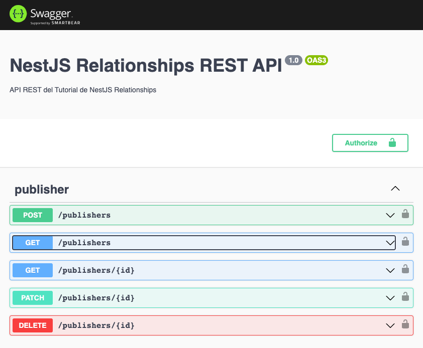
Podemos copiar el JWT obtenido, pulsar el botón Authorize de nuestra API y pegar el JWT copiado. Esto permitirá el acceso a todos los endpoints de la API y podremos usarlas.
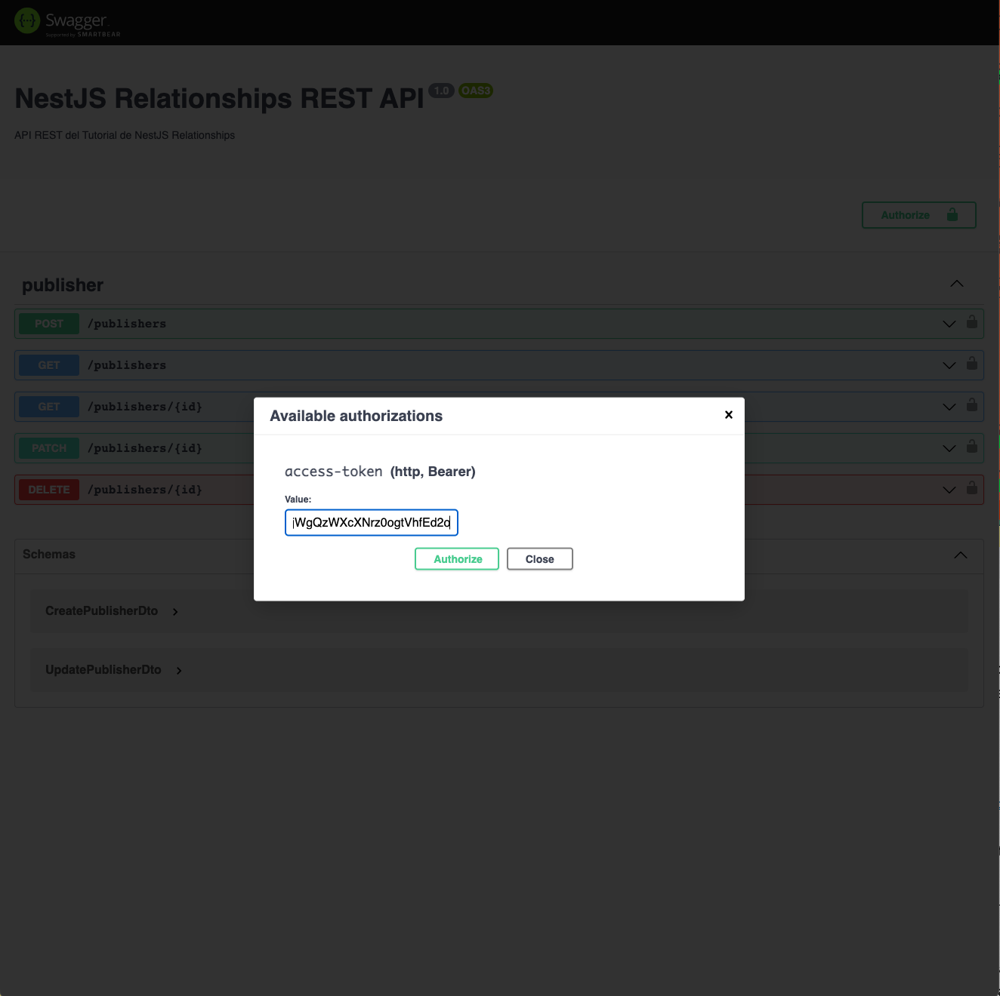
Usaremos el endpoint POST /publishers para crear editoriales. Al desplegar el endpoint aparece un botón de Try out para lanzar la petición desde Swagger UI. Aparece un cuerpo de ejemplo con el DTO configurado en create-publisher.dto.ts. Si pulsamos Execute creará esa editorial en la base de datos.
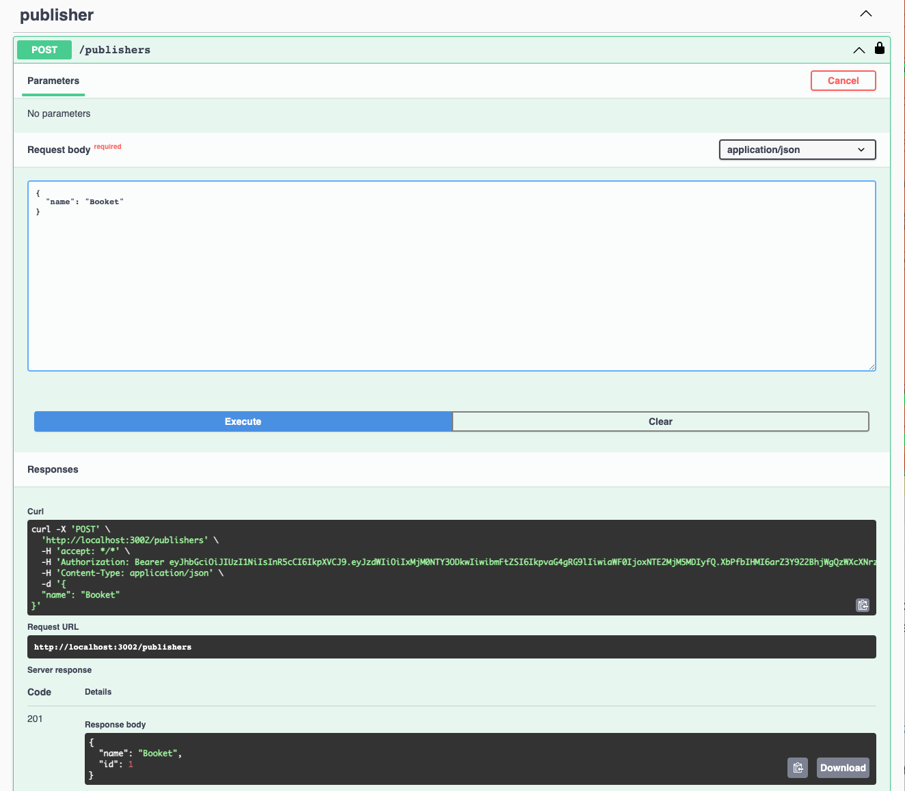
La parte de Server response muestra el código de estado HTTP devuelto así como la respuesta, que indica que la editorial ha sido creada y nos muestra el id generado por la base de datos. El objeto que devuelve es una entity Publisher tal y como configuramos en el método create del servicio publishers.service.ts.
Crear a continuación otra editorial con "name": "Alfaguara".
Si ahora usamos el endpoint GET /publishers obtendremos las dos editoriales creadas.
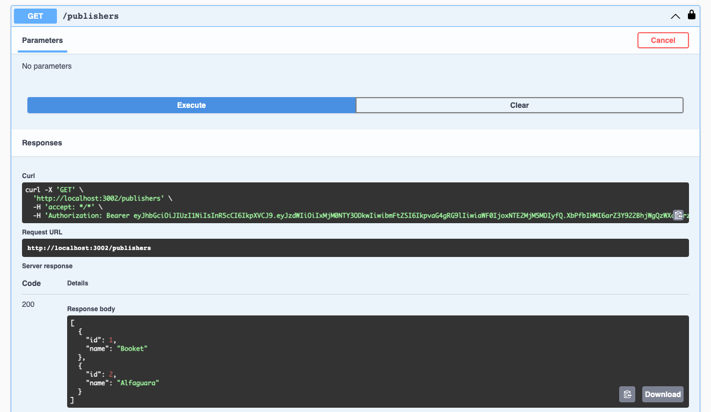
La parte de Server response muestra el código de estado HTTP devuelto así como la respuesta con las dos editoriales. El objeto que devuelve es un array de entity Publisher tal y como configuramos en el método findAll del servicio publishers.service.ts.
4. Creación del módulo de libros
Comenzamos creando un resource NestJS para los libros. Esto creará el módulo, controlador, servicio, DTOs y entidad.
$ nest generate resource books4.1. Configuración de la entidad
book.entity.tsimport { Entity, Column, PrimaryGeneratedColumn } from 'typeorm';
import { ApiProperty } from '@nestjs/swagger';
@Entity() (1)
export class Book {
@ApiProperty({ example: 99 })
@PrimaryGeneratedColumn() (2)
id: number;
@ApiProperty({ example: 'Don Quijote de la Mancha' })
@Column() (3)
title: string;
@ApiProperty({ example: 'Novela' })
@Column()
genre: string;
@ApiProperty({
example: 'Esta edición del Ingenioso hidalgo don Quijote de la Mancha ...',
})
@Column('text')
description: string;
@ApiProperty({ example: 'Miguel de Cervantes' })
@Column()
author: string;
@ApiProperty({ example: 592 })
@Column()
pages: number;
@ApiProperty({ example: 'www.imagen.com/quijote.png' })
@Column()
image_url: string;
}| 1 | Decorador @Entity para indicar que se trata de una entidad |
| 2 | Columna de clave primaria |
| 3 | Columna para el título |
4.2. Configuración del módulo
books.module.tsimport { Module } from '@nestjs/common';
import { BooksService } from './books.service';
import { BooksController } from './books.controller';
import { TypeOrmModule } from '@nestjs/typeorm';
import { Book } from './entities/book.entity';
import { AuthModule } from '../utilities/auth.module';
@Module({
imports: [TypeOrmModule.forFeature([Book]), AuthModule], (1)
controllers: [BooksController],
providers: [BooksService],
})
export class BooksModule {}| 1 | Añadimos los imports para registrar la entidad de los libros y el módulo de autenticación |
Si teníamos el proyecto en ejecución se habrá creado una nueva tabla book en la base de datos correspondiente a la entidad Book.
4.3. Creación del DTO de creación de libros
Inicialmente, las columnas de libros son las siguientes:
-
idcomo identificador de la editorial. -
titlecomo título del libro. -
genrecomo género del libro. -
descriptioncomo descripción del libro. -
authorcomo autor del libro. -
pagescomo número de páginas del libro. -
image_urlcomo URL donde localizar la portada del libro.
Para crear un libro configuraremos su DTO e incluiremos todas las columnas de la entidad excepto el id. El id no se pasará porque será generado por la base de datos en el momento de la inserción.
create-book.dto.ts:import { ApiProperty } from '@nestjs/swagger';
export class CreateBookDto {
@ApiProperty({ example: 'Don Quijote de la Mancha' })
readonly title: string;
@ApiProperty({ example: 'Novela' })
readonly genre: string;
@ApiProperty({
example: 'Esta edición del Ingenioso hidalgo don Quijote de la Mancha ...',
})
readonly description: string;
@ApiProperty({ example: 'Miguel de Cervantes' })
readonly author: string;
@ApiProperty({ example: 592 })
readonly pages: number;
@ApiProperty({ example: 'www.imagen.com/quijote.png' })
readonly image_url: string;
}4.4. Implementación de los métodos del servicio
books.service.tsimport { Injectable } from '@nestjs/common';
import { CreateBookDto } from './dto/create-book.dto';
import { UpdateBookDto } from './dto/update-book.dto';
import { InjectRepository } from '@nestjs/typeorm';
import { Repository } from 'typeorm';
import { Book } from './entities/book.entity';
@Injectable()
export class BooksService {
constructor(
@InjectRepository(Book) private booksRepository: Repository<Book>,
) {}
async create(createBookDto: CreateBookDto): Promise<Book> {
return this.booksRepository.save(createBookDto);
}
async findAll(): Promise<Book[]> {
return this.booksRepository.find({});
}
async findOne(id: number): Promise<Book> {
return this.booksRepository.findOne({
where: { id },
});
}
async update(id: number, updateBookDto: UpdateBookDto): Promise<Book> {
let toUpdate = await this.booksRepository.findOne({
where: { id },
});
let updated = Object.assign(toUpdate, updateBookDto);
return this.booksRepository.save(updated);
}
async remove(id: number): Promise<any> {
return this.booksRepository.delete({ id });
}
}4.5. Implementación del controlador
books.controller.tsimport {
Controller,
Get,
Post,
Body,
Patch,
Param,
Delete,
UseGuards,
} from '@nestjs/common';
import { BooksService } from './books.service';
import { CreateBookDto } from './dto/create-book.dto';
import { UpdateBookDto } from './dto/update-book.dto';
import { ApiTags, ApiBearerAuth } from '@nestjs/swagger';
import { AuthGuard } from '@nestjs/passport';
@Controller('books')
@ApiTags('book')
@UseGuards(AuthGuard('jwt'))
@ApiBearerAuth('access-token')
export class BooksController {
constructor(private readonly booksService: BooksService) {}
@Post()
create(@Body() createBookDto: CreateBookDto) {
return this.booksService.create(createBookDto);
}
@Get()
findAll() {
return this.booksService.findAll();
}
@Get(':id')
findOne(@Param('id') id: string) {
return this.booksService.findOne(+id);
}
@Patch(':id')
update(@Param('id') id: string, @Body() updateBookDto: UpdateBookDto) {
return this.booksService.update(+id, updateBookDto);
}
@Delete(':id')
remove(@Param('id') id: string) {
return this.booksService.remove(+id);
}
}4.6. Comprobación de los endpoints
Si activamos la aplicación en http://<url>:<port>/docs veremos que ya están disponibles los endpoints de los libros. Tras autenticarnos con un JWT crearemos un libro y comprobaremos que se recupera de la base de datos.
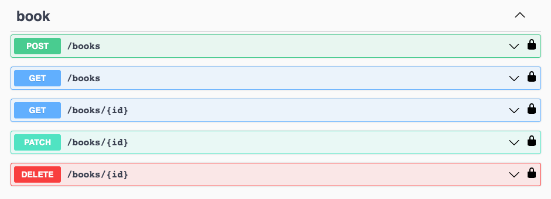
Usaremos el endpoint POST /books para crear libros. Al desplegar el endpoint pulsaremos el botón de Try out para lanzar la petición desde Swagger UI. Aparece un cuerpo de ejemplo con el DTO configurado en create-book.dto.ts. Si pulsamos Execute creará ese libro en la base de datos.
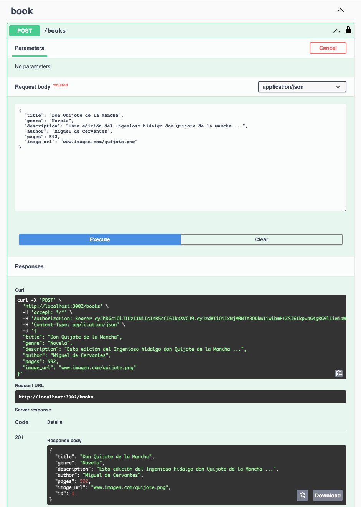
La parte de Server response muestra el código de estado HTTP devuelto así como la respuesta, que indica que el libro ha sido creado y nos muestra el id generado por la base de datos. El objeto que devuelve es una entity Book tal y como configuramos en el método create del servicio books.service.ts.
Si ahora usamos el endpoint GET /books obtendremos el libro creado.
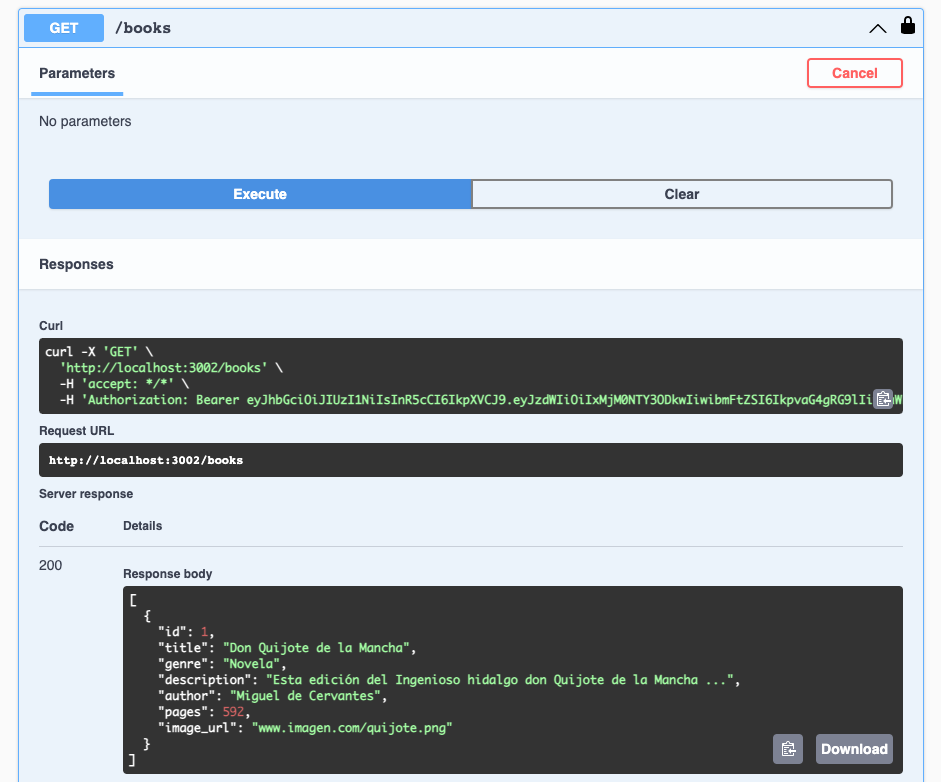
La parte de Server response muestra el código de estado HTTP devuelto así como la respuesta con el libro. El objeto que devuelve es un array de entity Book tal y como configuramos en el método findAll del servicio books.service.ts.
5. Creación del módulo de comentarios
Comenzamos creando un resource NestJS para los comentarios. Esto creará el módulo, controlador, servicio, DTOs y entidad.
$ nest generate resource comments5.1. Configuración de la entidad
comment.entity.tsimport { ApiProperty } from '@nestjs/swagger';
import { PrimaryGeneratedColumn, Column, Entity } from 'typeorm';
@Entity() (1)
export class Comment {
@ApiProperty({ example: 99 })
@PrimaryGeneratedColumn() (2)
id: number;
@ApiProperty({ example: 'Genial!!' })
@Column()
title: string; (3)
@ApiProperty({ example: 5 })
@Column()
stars: number;
@ApiProperty({
example:
'Compré el libro por los comentarios tan buenos que tenía. El libro comentá la historia de España de manera muy general y desde un punto de vista súper simplista. Resumiendo temas de compleja explicación en tan solo una frase. ',
})
@Column('text')
comment: string;
@ApiProperty({ example: 'johndoe' })
@Column()
username: string;
}| 1 | Decorador @Entity para indicar que se trata de una entidad |
| 2 | Columna de clave primaria |
| 3 | Columna para el título del comentario |
5.2. Configuración del módulo
comments.module.tsimport { Module } from '@nestjs/common';
import { CommentsService } from './comments.service';
import { CommentsController } from './comments.controller';
import { TypeOrmModule } from '@nestjs/typeorm';
import { AuthModule } from '../utilities/auth.module';
import { Comment } from './entities/comment.entity';
@Module({
imports: [TypeOrmModule.forFeature([Comment]), AuthModule], (1)
controllers: [CommentsController],
providers: [CommentsService],
})
export class CommentsModule {}| 1 | Añadimos los imports para registrar la entidad de los comentarios y el módulo de autenticación |
Si teníamos el proyecto en ejecución se habrá creado una nueva tabla comment en la base de datos correspondiente a la entidad Comment.
5.3. Creación del DTO de creación de comentarios
Inicialmente, las columnas de comentarios son las siguientes:
-
idcomo identificador del comentario. -
titlecomo título del comentario. -
starscomo valoración en forma de estrellas que tiene el comentario. -
commentcomo descripción del comentario. -
usernamecomo autor del comentario.
Para crear un comentario configuraremos su DTO e incluiremos todas las columnas de la entidad excepto el id. El id no se pasará porque será generado por la base de datos en el momento de la inserción.
create-comment.dto.ts:import { ApiProperty } from '@nestjs/swagger';
export class CreateCommentDto {
@ApiProperty({ example: 'Genial!!' })
readonly title: string;
@ApiProperty({ example: 5 })
readonly stars: number;
@ApiProperty({
example:
'Compré el libro por los comentarios tan buenos que tenía. El libro comentá la historia de España de manera muy general y desde un punto de vista súper simplista. Resumiendo temas de compleja explicación en tan solo una frase. ',
})
readonly comment: string;
@ApiProperty({ example: 'johndoe' })
readonly username: string;
}5.4. Implementación de los métodos del servicio
comments.service.tsimport { Injectable } from '@nestjs/common';
import { CreateCommentDto } from './dto/create-comment.dto';
import { InjectRepository } from '@nestjs/typeorm';
import { Repository } from 'typeorm';
import { UpdateCommentDto } from './dto/update-comment.dto';
import { Comment } from './entities/comment.entity';
@Injectable()
export class CommentsService {
constructor(
@InjectRepository(Comment)
private commentsRepository: Repository<Comment>,
) {}
create(createCommentDto: CreateCommentDto): Promise<Comment> {
return this.commentsRepository.save(createCommentDto);
}
async findAll(): Promise<Comment[]> {
return this.commentsRepository.find();
}
async findOne(id: number): Promise<Comment> {
return this.commentsRepository.findOne({
where: { id },
});
}
async update(id: number, updateCommentDto: UpdateCommentDto) {
return this.commentsRepository.update(id, updateCommentDto);
}
async remove(id: number) {
return this.commentsRepository.delete({ id });
}
}5.5. Implementación del controlador
comments.controller.tsimport {
Controller,
Get,
Post,
Body,
Patch,
Param,
Delete,
UseGuards,
} from '@nestjs/common';
import { CommentsService } from './comments.service';
import { CreateCommentDto } from './dto/create-comment.dto';
import { UpdateCommentDto } from './dto/update-comment.dto';
import { ApiTags, ApiBearerAuth } from '@nestjs/swagger';
import { AuthGuard } from '@nestjs/passport';
@Controller('comments')
@ApiTags('comment')
@UseGuards(AuthGuard('jwt'))
@ApiBearerAuth('access-token')
export class CommentsController {
constructor(private readonly commentsService: CommentsService) {}
@Post()
create(@Body() createCommentDto: CreateCommentDto) {
return this.commentsService.create(createCommentDto);
}
@Get()
findAll() {
return this.commentsService.findAll();
}
@Get(':id')
findOne(@Param('id') id: string) {
return this.commentsService.findOne(+id);
}
@Patch(':id')
update(@Param('id') id: string, @Body() updateCommentDto: UpdateCommentDto) {
return this.commentsService.update(+id, updateCommentDto);
}
@Delete(':id')
remove(@Param('id') id: string) {
return this.commentsService.remove(+id);
}
}5.6. Comprobación de los endpoints
Si activamos la aplicación en http://<url>:<port>/docs veremos que ya están disponibles los endpoints de los comentarios. Tras autenticarnos con un JWT crearemos un par de comentarios y comprobaremos que se recuperan de la base de datos.
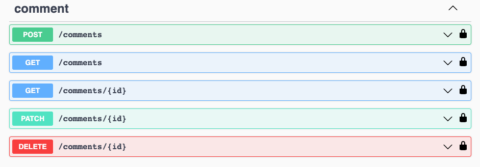
Usaremos el endpoint POST /comments para crear comentarios. Al desplegar el endpoint pulsaremos el botón de Try out para lanzar la petición desde Swagger UI. Aparece un cuerpo de ejemplo con el DTO configurado en create-comment.dto.ts. Si pulsamos Execute creará ese comentario en la base de datos.
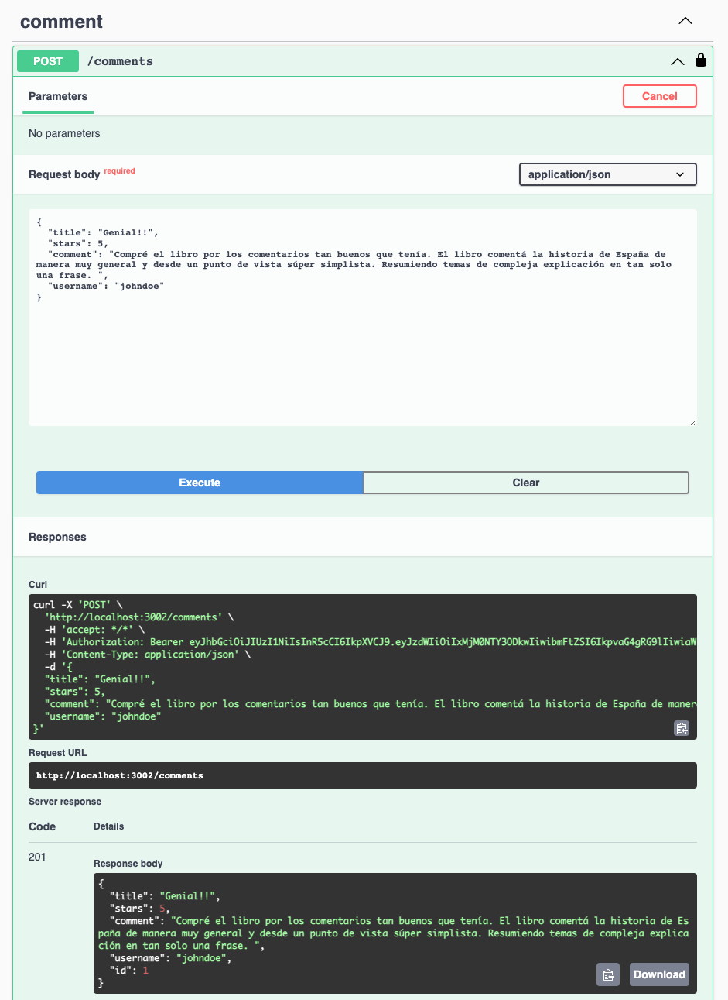
La parte de Server response muestra el código de estado HTTP devuelto así como la respuesta, que indica que el comentario ha sido creado y nos muestra el id generado por la base de datos. El objeto que devuelve es una entity Comment tal y como configuramos en el método create del servicio comments.service.ts.
Crear a continuación otro comentario con estos valores
{
"title": "Le falló el final",
"stars": 4,
"comment": "Una aventura magnífica que se quedó un poco corta en su final",
"username": "marysmith"
}Si ahora usamos el endpoint GET /comments obtendremos los comentarios creados.
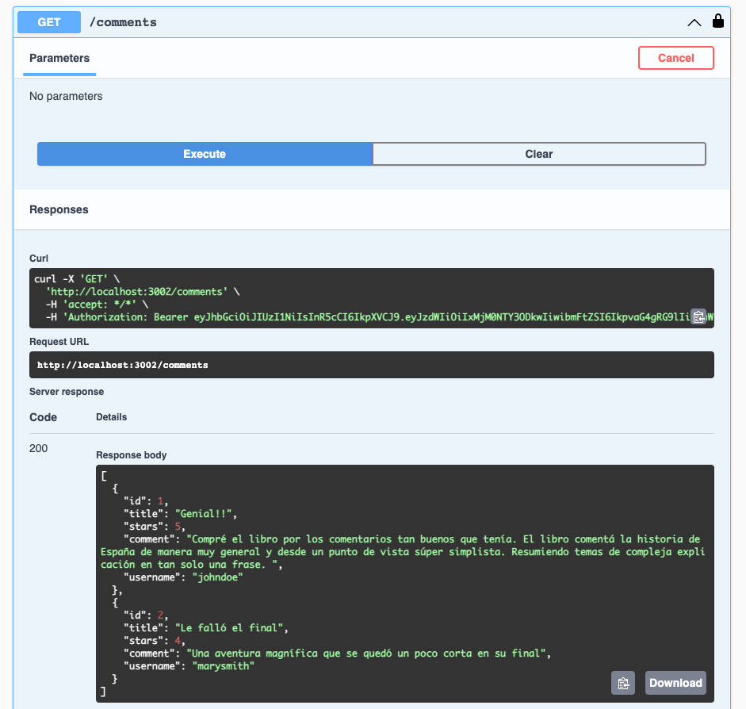
La parte de Server response muestra el código de estado HTTP devuelto así como la respuesta con los comentarios. El objeto que devuelve es un array de entity Comment tal y como configuramos en el método findAll del servicio comments.service.ts.
6. Creación del módulo de palabras clave
Comenzamos creando un resource NestJS para las palabras clave. Esto creará el módulo, controlador, servicio, DTOs y entidad.
$ nest generate resource keywords6.1. Configuración de la entidad
keyword.entity.tsimport { Entity, PrimaryGeneratedColumn, Column } from 'typeorm';
import { ApiProperty } from '@nestjs/swagger';
@Entity()
export class Keyword {
@ApiProperty({ example: 99 })
@PrimaryGeneratedColumn()
id: number;
@ApiProperty({ example: 'NestJS' })
@Column()
keyword: string;
}| 1 | Decorador @Entity para indicar que se trata de una entidad |
| 2 | Columna de clave primaria |
| 3 | Columna para la palabra clave |
6.2. Configuración del módulo
keywords.module.tsimport { Module } from '@nestjs/common';
import { KeywordsService } from './keywords.service';
import { KeywordsController } from './keywords.controller';
import { TypeOrmModule } from '@nestjs/typeorm';
import { Keyword } from './entities/keyword.entity';
import { AuthModule } from '../utilities/auth.module';
@Module({
imports: [TypeOrmModule.forFeature([Keyword]), AuthModule], (1)
controllers: [KeywordsController],
providers: [KeywordsService],
})
export class KeywordsModule {}| 1 | Añadimos los imports para registrar la entidad de las palabras clave y el módulo de autenticación |
Si teníamos el proyecto en ejecución se habrá creado una nueva tabla keyword en la base de datos correspondiente a la entidad Keyword.
6.3. Creación del DTO de creación de palabras clave
Inicialmente, las columnas de palabras clave son las siguientes:
-
idcomo identificador de la palabra clave. -
keywordcomo palabra clave.
Para crear una palabra clave configuraremos su DTO e incluiremos todas las columnas de la entidad excepto el id. El id no se pasará porque será generado por la base de datos en el momento de la inserción.
create-keyword.dto.ts:import { ApiProperty } from '@nestjs/swagger';
export class CreateKeywordDto {
@ApiProperty({ example: 'NestJS' })
readonly keyword: string;
}6.4. Implementación de los métodos del servicio
keywords.service.tsimport { Injectable } from '@nestjs/common';
import { CreateKeywordDto } from './dto/create-keyword.dto';
import { UpdateKeywordDto } from './dto/update-keyword.dto';
import { InjectRepository } from '@nestjs/typeorm';
import { Repository } from 'typeorm';
import { Keyword } from './entities/keyword.entity';
@Injectable()
export class KeywordsService {
constructor(
@InjectRepository(Keyword)
private keywordsRepository: Repository<Keyword>,
) {}
create(createKeywordDto: CreateKeywordDto): Promise<Keyword> {
return this.keywordsRepository.save(createKeywordDto);
}
async findAll(): Promise<Keyword[]> {
return this.keywordsRepository.find();
}
async findOne(id: number): Promise<Keyword> {
return this.keywordsRepository.findOne({
where: { id },
});
}
findBooks(id: number): Promise<Keyword> {
return this.keywordsRepository.findOne({
where: { id },
});
}
async update(id: number, updateKeywordDto: UpdateKeywordDto) {
return this.keywordsRepository.update(id, updateKeywordDto);
}
async remove(id: number) {
return this.keywordsRepository.delete({ id });
}
}6.5. Implementación del controlador
comments.controller.tsimport {
Controller,
Get,
Post,
Body,
Patch,
Param,
Delete,
UseGuards,
} from '@nestjs/common';
import { KeywordsService } from './keywords.service';
import { CreateKeywordDto } from './dto/create-keyword.dto';
import { UpdateKeywordDto } from './dto/update-keyword.dto';
import { ApiTags, ApiBearerAuth } from '@nestjs/swagger';
import { AuthGuard } from '@nestjs/passport';
@Controller('keywords')
@ApiTags('keyword')
@UseGuards(AuthGuard('jwt'))
@ApiBearerAuth('access-token')
export class KeywordsController {
constructor(private readonly keywordsService: KeywordsService) {}
@Post()
create(@Body() createKeywordDto: CreateKeywordDto) {
return this.keywordsService.create(createKeywordDto);
}
@Get()
findAll() {
return this.keywordsService.findAll();
}
@Get(':id')
findOne(@Param('id') id: string) {
return this.keywordsService.findOne(+id);
}
@Patch(':id')
update(@Param('id') id: string, @Body() updateKeywordDto: UpdateKeywordDto) {
return this.keywordsService.update(+id, updateKeywordDto);
}
@Delete(':id')
remove(@Param('id') id: string) {
return this.keywordsService.remove(+id);
}
}6.6. Comprobación de los endpoints
Si activamos la aplicación en http://<url>:<port>/docs veremos que ya están disponibles los endpoints de las palabras clave. Tras autenticarnos con un JWT crearemos dos palabras clave y comprobaremos que se recuperan de la base de datos.
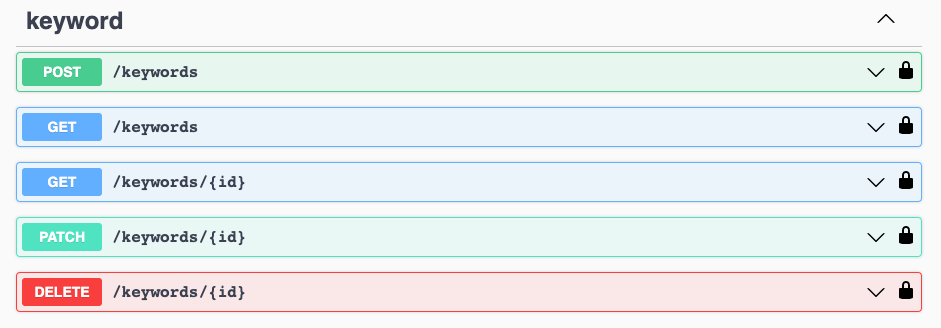
Usaremos el endpoint POST /keywords para crear palabras clave. Al desplegar el endpoint pulsaremos el botón de Try out para lanzar la petición desde Swagger UI. Aparece un cuerpo de ejemplo con el DTO configurado en create-keyword.dto.ts. Si pulsamos Execute creará esa palabra clave en la base de datos.
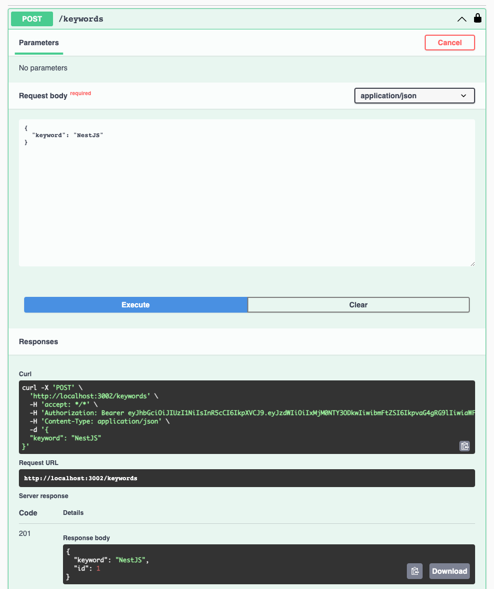
La parte de Server response muestra el código de estado HTTP devuelto así como la respuesta, que indica que la palabra clave ha sido creada y nos muestra el id generado por la base de datos. El objeto que devuelve es una entity Keyword tal y como configuramos en el método create del servicio keywords.service.ts.
Crear a continuación otra editorial con "keyword": "REST API".
Si ahora usamos el endpoint GET /keywords obtendremos los comentarios creados.
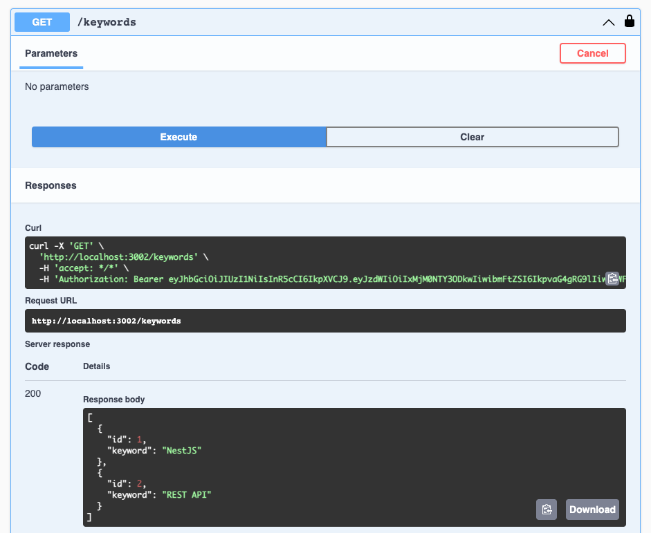
La parte de Server response muestra el código de estado HTTP devuelto así como la respuesta con las palabras clave. El objeto que devuelve es un array de entity Keyword tal y como configuramos en el método findAll del servicio keywords.service.ts.
7. Creación de las relaciones
Hasta ahora nos hemos limitado a crear los módulos de la API teniendo en cuenta únicamente los objetos o entidades que existen en nuestro proyecto desde el punto de vista de bases de datos. Es decir, nos hemos limitado a reflejar en las entidades las propiedades propias de cada objeto del dominio. Sin embargo, no hemos prestado atención aún a las relaciones existentes entre ellos y a su implicación en la implementación de los servicios. Esto último hace referencia a que si entre Book y Comment existe una relación 1:M, nos planteamos mostrar los comentarios de cada libro al recuperar un libro. Esto posiblemente implicaría una modificación de los métodos del servicio de Book para que recuperase los comentarios asociados a cada libro.
En esta sección veremos cómo definir las relaciones entre entidades y realizaremos los cambios en los servicios para hidratar o enriquecer cada objeto con los datos de sus objetos relacionados.
7.1. Creación de la relación entre Book y Publisher
Entre las entidades Book y Publisher hay una relación M:1. Podemos hacer la relación unidireccional o bidireccional. En este tutorial la haremos bidireccional para que podamos mostrar la editorial de un libro así como los libros de una editorial.
7.1.1. Modificación de las entidades
Comenzamos añadiendo los cambios a las entidades. Lo haremos en dos pasos:
-
Añadir los campos a cada entidad.
-
Añadir a cada entidad los decoradores de las relaciones.
Lo hacemos en dos pasos porque los decoradores usan los nombres de campo del otro extremo de la relación. Por tanto, para no provocar errores durante la creación de las relaciones definiremos primero los campos para poder referenciarlos al crear las relaciones en el segundo paso.
|
En relaciones unidireccionales sólo se crea el campo y el decorador de relación en una entidad. |
Añadir los campos a cada entidad.
A continuación se muestran los cambios introducidos en la entidad Book para añadir un nuevo campo publisher, cuyo tipo es Publisher.
book.entity.ts...
import { Publisher } from '../../publishers/entities/publisher.entity'; (1)
@Entity()
export class Book {
...
@ApiProperty({ example: 'www.imagen.com/quijote.png' })
@Column()
image_url: string;
publisher: Publisher; (2)
}| 1 | Importación de la entidad Publisher |
| 2 | Creación del campo publisher |
A continuación se muestran los cambios introducidos en la entidad Publisher para añadir un nuevo campo books, cuyo tipo es Book[].
publisher.entity.tsimport { ApiProperty } from '@nestjs/swagger';
import { Column, Entity, PrimaryGeneratedColumn } from 'typeorm';
import { Book } from '../../books/entities/book.entity'; (1)
@Entity()
export class Publisher {
@ApiProperty({ example: 99 })
@PrimaryGeneratedColumn()
id: number;
@ApiProperty({ example: 'Booket' })
@Column()
name: string;
books: Book[]; (2)
}| 1 | Importación de la entidad Book |
| 2 | Creación del campo books |
Por ahora, ninguno de las campos introducidos en las entidades Book y Publisher tienen efecto sobre la base de datos. Esto se debe a que ni han sido decorados con @Column() ni con ninguna relación. Por ahora, son sólo campos de la clase, pero no han pasado a la base de datos.
Añadir los decoradores de relación a cada entidad
A continuación se muestran los cambios introducidos en la entidad Book para añadir la relación M:1 con Publisher.
book.entity.ts...
@Entity()
export class Book {
...
@ApiProperty({ example: 'www.imagen.com/quijote.png' })
@Column()
image_url: string;
@ApiProperty({ example: { id: 1 } }) (1)
@ManyToOne( (2)
() => Publisher, (3)
publisher => publisher.books, (4)
)
publisher: Publisher;
}| 1 | Al ser un objeto, para introducir una editorial incluiremos el nombre de campo del identificador de la editorial y un valor |
| 2 | Decorador para la relación M:1 |
| 3 | Definición del tipo (del otro extremo) de la relación |
| 4 | Definición de la propiedad inversa. |
Para la definición de la propiedad se establece un objeto (publisher) de la entidad del otro extremo y se indica el campo que establece la relación inversa (publisher.books).
Al guardar los cambios en la entidad, ya sí se trasladan los cambios a la base de datos. Así, la tabla book ahora contiene una nueva columna para la editorial del libro.
A continuación se muestran los cambios introducidos en la entidad Publisher para añadir la relación 1:M con Book.
publisher.entity.tsimport { ApiProperty } from '@nestjs/swagger';
import { Column, Entity, OneToMany, PrimaryGeneratedColumn } from 'typeorm';
import { Book } from '../../books/entities/book.entity';
@Entity()
export class Publisher {
@ApiProperty({ example: 99 })
@PrimaryGeneratedColumn()
id: number;
@ApiProperty({ example: 'Booket' })
@Column()
name: string;
@OneToMany( (1)
() => Book, (2)
book => book.publisher, (3)
)
books: Book[];
}| 1 | Decorador para la relación 1:M |
| 2 | Definición del tipo (del otro extremo) de la relación |
| 3 | Definición de la propiedad inversa. |
Para la definición de la propiedad se establece un objeto (book) de la entidad del otro extremo y se indica el campo que establece la relación inversa (book.publisher).
Al guardar los cambios en la entidad, estos cambios no se trasladan a la base de datos, ya que en relaciones M:1 se añade la clave de la entidad que actúa como 1 (publisher) a la tabla de la entidad que actúa como M (book).
7.1.2. Modificación del DTO
En este paso se modifican los DTO afectados. Para el caso de los libros habrá que modificar el DTO create-book.dto.ts para añadirle la editorial de un libro. Este DTO se usará tanto para la creación de nuevos libros como para la modificación de libros existentes. En cualquier caso, el valor introducido para editorial deberá ser un objeto con el campo id y el identificador de la editorial del libro. Por tanto. la editorial deberá existir previamente antes de asignarla a un libro.
create-book.dto.ts...
export class CreateBookDto {
...
@ApiProperty({ example: 'www.imagen.com/quijote.png' })
readonly image_url: string;
@ApiProperty({ example: { id: 1 } }) (1)
readonly publisher: Publisher; (2)
}
| 1 | Ejemplo de referencia a una editorial |
| 2 | Nuevo campo para el DTO |
A continuación introduciremos un nuevo libro pasándole como valor de publisher el objeto {"id": 1}, que de acuerdo con nuestra base de datos es la editorial Booket.
{
"title": "Historia de España contada para escépticos",
"genre": "Historia",
"description": "Como escribe el autor, no pretende ser veraz, justa y desapasionada, porque ninguna historia lo es. No está hecha para halagar a reyes y gobernantes, ni pretende halagar a los banqueros, ni a la Conferencia Episcopal, ni al colectivo gay.",
"author": "Juan Eslava Galán",
"pages": 592,
"image_url": "https://images-na.ssl-images-amazon.com/images/I/51IyZ5Mq8YL._SX326_BO1,204,203,200_.jpg",
"publisher": {
"id": 1
}
}Tras la inserción vemos que el servidor responde correctamente mostrando el código de estado HTTP de la creación del libro y devuelvel el libro creado con el nuevo identificador generado por la base de datos.
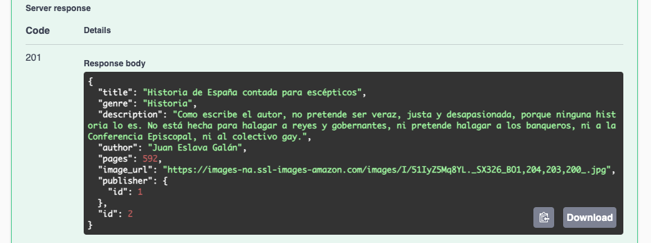
Del mismo modo, podemos modificar el primer libro para añadirle la editorial. Habría que usar el endpoint PATCH /books/{id} y pasarle como body el objeto de la editorial al que se quiere asignar. Como el libro 1 es de la editorial Alfaguara, que es la 2 haríamos la modificación tal y como indica la figura siguiente.
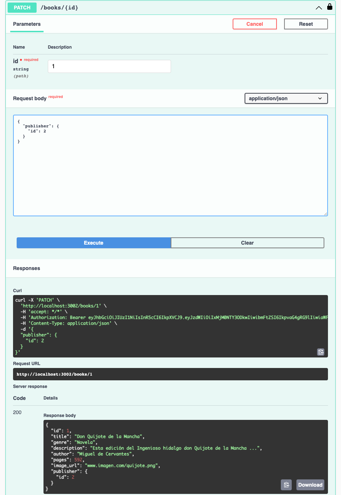
Sin embargo, si recuperamos los libros con el endpoint GET /books veremos que el libro aparece, pero no la editorial. En la sección siguiente veremos cómo modificar books.service.ts para que devuelva los datos de la editorial al recuperar un libro.
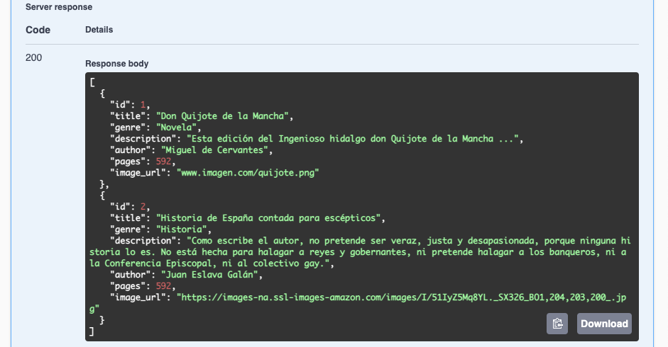
7.1.3. Modificación de los servicios para que devuelvan los datos relacionados.
TypeORM permite que a la familia de métodos find se le pase un elemento relations configurando un array de relaciones para indicar las entidades relacionadas que se deberían cargar. En nuestro caso tendremos que hacer modificaciones en:
-
El servicio de libros para que muestre la editorial al recuperar los libros.
-
El servicio de editoriales para que se muestren los libros al recuperar una editorial.
Veamos cómo hacerlo.
Comenzaremos modificando el servicio de libros para que cargue las editoriales al recuperar un libro. Se trata de incluir la relación publisher en los métodos find y findOne de books.service.ts.
books.service.ts...
@Injectable()
export class BooksService {
...
async findAll(): Promise<Book[]> {
return this.booksRepository.find({ relations: ['publisher'] }); (1)
}
async findOne(id: number): Promise<Book> {
return this.booksRepository.findOne({
where: { id },
relations: ['publisher'], (2)
});
}
...
}| 1 | Carga de las editoriales relacionadas al recuperar los libros |
| 2 | Carga de la editorial relacionada al recuperar un libro |
Si ahora recuperamos los libros con el endpoint GET /books vemos que ya se incorpora la editorial a cada libro.
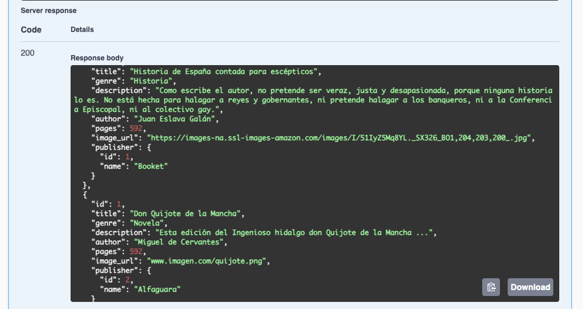
A continuación modificamos el servicio de editoriales para que cargue los libros al recuperar una ediorial. Se trata de incluir la relación books en los métodos find y findOne de publishers.service.ts.
publishers.service.ts...
@Injectable()
export class PublishersService {
...
async findAll(): Promise<Publisher[]> {
return this.publishersRepository.find({ relations: ['books'] }); (1)
}
async findOne(id: number): Promise<Publisher> {
return this.publishersRepository.findOne({
where: { id },
relations: ['books'], (2)
});
}
...
}| 1 | Carga de los libros relacionadas al recuperar las editoriales |
| 2 | Carga de los libros relacionados al recuperar una editorial |
Si ahora recuperamos las editoriales con el endpoint GET /publishers vemos que ya se incorpora los libros a cada editorial.
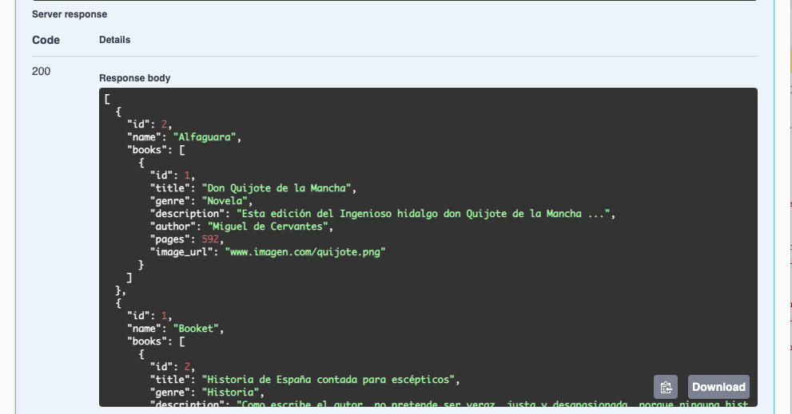
7.2. Creación de la relación entre Book y Comment
Entre las entidades Book y Comment hay una relación 1:M. Podemos hacer la relación unidireccional o bidireccional. En este tutorial la haremos bidireccional para que podamos mostrar los comentarios de un libro así como ver a qué libro corresponde un comentario.
7.2.1. Modificación de las entidades
Comenzamos añadiendo los cambios a las entidades. Lo haremos en dos pasos:
-
Añadir los campos a cada entidad.
-
Añadir a cada entidad los decoradores de las relaciones.
Tal y como hemos comentado, lo hacemos en dos pasos porque los decoradores usan los nombres de campo del otro extremo de la relación. Por tanto, para no provocar errores durante la creación de las relaciones definiremos primero los campos para poder referenciarlos al crear las relaciones en el segundo paso.
|
En relaciones unidireccionales sólo se crea el campo y el decorador de relación en una entidad. |
Añadir los campos a cada entidad.
A continuación se muestran los cambios introducidos en la entidad Book para añadir un nuevo campo comments, cuyo tipo es Comment[].
book.entity.ts...
import { Comment } from '../../comments/entities/comment.entity'; (1)
@Entity()
export class Book {
...
@ApiProperty({ example: { id: 1 } })
@ManyToOne(() => Publisher, (publisher: Publisher) => publisher.books)
publisher: Publisher;
comments: Comment[]; (2)
}| 1 | Importación de la entidad Comment |
| 2 | Creación del campo books |
A continuación se muestran los cambios introducidos en la entidad Comment para añadir un nuevo campo book, cuyo tipo es Book.
comment.entity.ts...
import { Book } from '../../books/entities/book.entity'; (1)
@Entity()
export class Comment {
...
@ApiProperty({ example: 'johndoe' })
@Column()
username: string;
book: Book; (2)
}| 1 | Importación de la entidad Book |
| 2 | Creación del campo book |
Por ahora, ninguno de las campos introducidos en las entidades Book y Comment tienen efecto sobre la base de datos. Esto se debe a que ni han sido decorados con @Column() ni con ninguna relación. Por ahora, son sólo campos de la clase, pero no han pasado a la base de datos.
Añadir los decoradores de relación a cada entidad
A continuación se muestran los cambios introducidos en la entidad Book para añadir la relación 1:M con Comment.
book.entity.ts...
import { Entity, Column, PrimaryGeneratedColumn, ManyToOne, OneToMany } from 'typeorm';
import { ApiProperty } from '@nestjs/swagger';
import { Publisher } from '../../publishers/entities/publisher.entity';
import { Comment } from '../../comments/entities/comment.entity';
@Entity()
export class Book {
@ApiProperty({ example: 99 })
@PrimaryGeneratedColumn()
id: number;
@ApiProperty({ example: 'Don Quijote de la Mancha' })
@Column()
title: string;
@ApiProperty({ example: 'Novela' })
@Column()
genre: string;
@ApiProperty({
example: 'Esta edición del Ingenioso hidalgo don Quijote de la Mancha ...',
})
@Column('text')
description: string;
@ApiProperty({ example: 'Miguel de Cervantes' })
@Column()
author: string;
@ApiProperty({ example: 592 })
@Column()
pages: number;
@ApiProperty({ example: 'www.imagen.com/quijote.png' })
@Column()
image_url: string;
@ApiProperty({ example: { id: 1 } })
@ManyToOne(() => Publisher, (publisher: Publisher) => publisher.books)
publisher: Publisher;
@OneToMany( (1)
() => Comment, (2)
(comments: Comment) => comments.book, (3)
)
comments: Comment[];
}| 1 | Decorador para la relación 1:M |
| 2 | Definición del tipo (del otro extremo) de la relación |
| 3 | Definición de la propiedad inversa. |
Para la definición de la propiedad se establece un objeto (comments) de la entidad del otro extremo y se indica el campo que establece la relación inversa (comments.book).
Al guardar los cambios en la entidad, estos cambios no se trasladan a la base de datos, ya que en relaciones 1:M se añade la clave de la entidad que actúa como 1 (Book) a la tabla de la entidad que actúa como M (Comment).
A continuación se muestran los cambios introducidos en la entidad Comment para añadir la relación M:1 con Book.
comment.entity.ts...
@Entity()
export class Comment {
...
@ApiProperty({ example: 'johndoe' })
@Column()
username: string;
@ManyToOne(
() => Book,
(book: Book) => book.comments,
)
book: Book;
}| 1 | Decorador para la relación M:1 |
| 2 | Definición del tipo (del otro extremo) de la relación |
| 3 | Definición de la propiedad inversa. |
Para la definición de la propiedad se establece un objeto (book) de la entidad del otro extremo y se indica el campo que establece la relación inversa (book.comments).
Al guardar los cambios en la entidad, ya sí se trasladan los cambios a la base de datos. Así, la tabla comment ahora contiene una nueva columna para el identificador del libro.
7.2.2. Modificación del DTO
En este paso se modifican los DTO afectados. Para el caso de los comentarios habrá que modificar el DTO create-comment.dto.ts para añadirle el identificador de un libro. Este DTO se usará tanto para la creación de nuevos comentarios como para la modificación de comentarios existentes. En cualquier caso, el valor introducido para el libro deberá ser un objeto con el campo id y el identificador del libro. Por tanto, el libro deberá existir previamente antes de crearle un comentario.
create-comment.dto.ts...
export class CreateCommentDto {
...
@ApiProperty({ example: 'johndoe' })
readonly username: string;
@ApiProperty({ example: { id: 1 }, type: String }) (1)
readonly book: Book;
}
| 1 | Ejemplo de referencia a un libro |
| 2 | Nuevo campo para el DTO |
|
Para evitar un error de referencias circulares, añadir |
A continuación introduciremos un nuevo comentario pasándole como valor de book el libro 1 ({"id": 1}).
{
"title": "Una maravilla!!",
"stars": 5,
"comment": "Alucinante",
"username": "johndoe",
"book": {
"id": 1
}
}Tras la inserción vemos que el servidor responde correctamente mostrando el código de estado HTTP de la creación del comentario y devuelvel el comentario creado con el nuevo identificador generado por la base de datos.
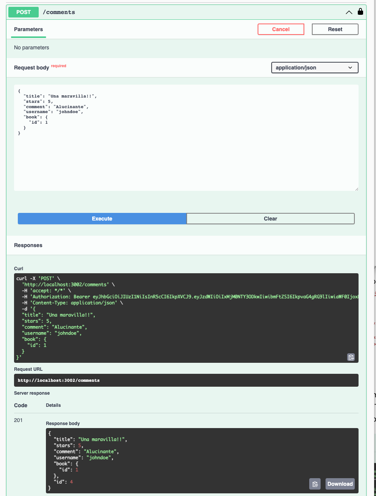
Del mismo modo, podemos modificar el primer comentario para añadirle un libro. Habría que usar el endpoint PATCH /comments/{id} y pasarle como body el objeto del libro al que se quiere asignar. Haríamos la modificación de asignar el comentario ' 1' al libro 1, tal y como indica la figura siguiente.
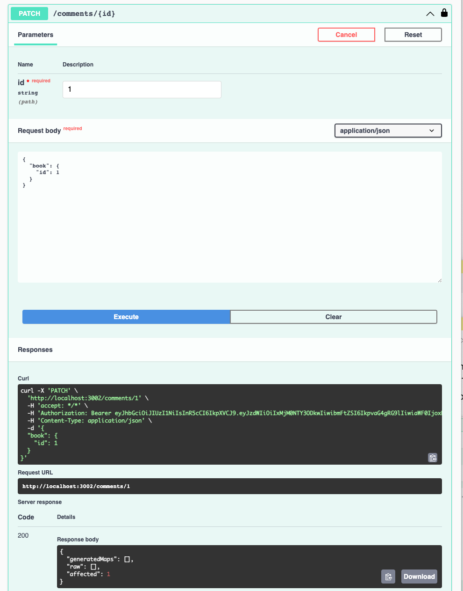
Sin embargo, si recuperamos los comentarios con el endpoint GET /comments veremos que aparecen los comentarios, pero sin libro. Del mismo modo, si obtenemos el libro 1, al que le hemos creados los comentarios, vemos que los datos aún no aparecen. En la sección siguiente veremos cómo modificar comments.service.ts para que devuelva los datos del libro al recuperar un comentario.
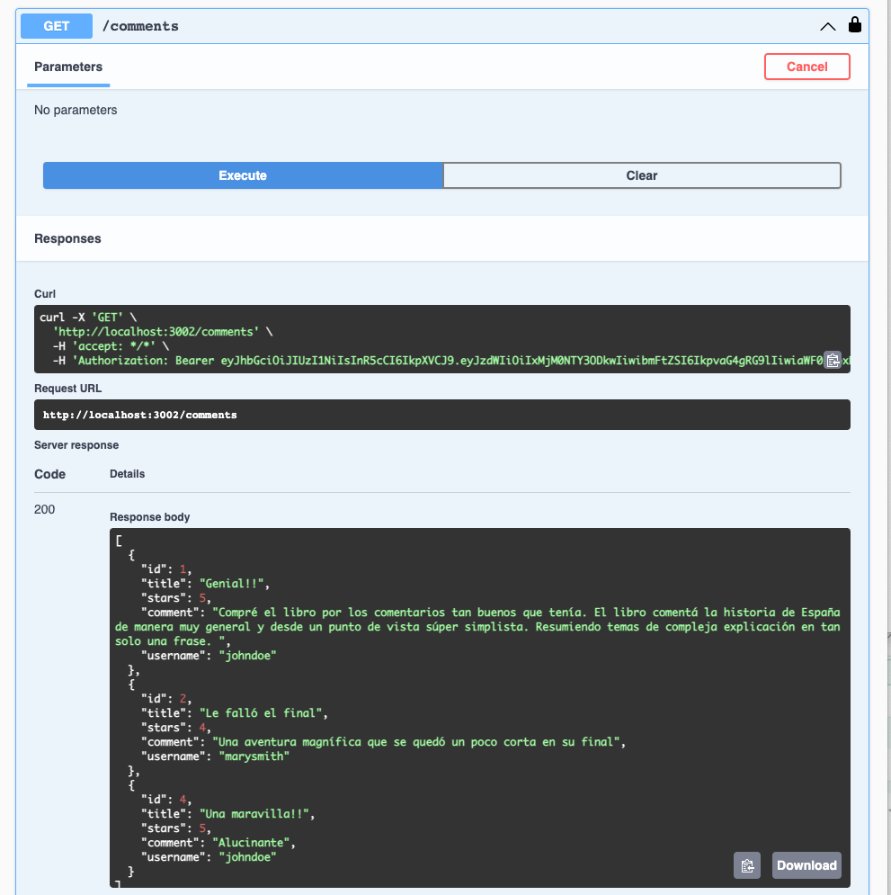
7.2.3. Modificación de los servicios para que devuelvan los datos relacionados.
Tal y como comentamos anteriormente, TypeORM permite que a la familia de métodos find se le pase un elemento relations configurando un array de relaciones para indicar las entidades relacionadas que se deberían cargar. En nuestro caso tendremos que hacer modificaciones en:
-
El servicio de libros para que muestre los comentarios al recuperar los libros.
-
El servicio de comentarios para que se muestre el libro al recuperar un comentario.
Veamos cómo hacerlo.
Comenzaremos modificando el servicio de libros para que cargue los comentarios al recuperar un libro. Se trata de incluir la relación comments en los métodos find y findOne de books.service.ts.
books.service.ts...
@Injectable()
export class BooksService {
...
async findAll(): Promise<Book[]> {
return this.booksRepository.find({ relations: ['publisher', 'comments'] }); (1)
}
async findOne(id: number): Promise<Book> {
return this.booksRepository.findOne({
where: { id },
relations: ['publisher', 'comments'], (2)
});
}
...
}| 1 | Carga de los comentarios relacionados al recuperar los libros |
| 2 | Carga de los comentarios relacionados al recuperar un libro |
Si ahora recuperamos los libros con el endpoint GET /books vemos que ya se incorporan los comentarios a cada libro.
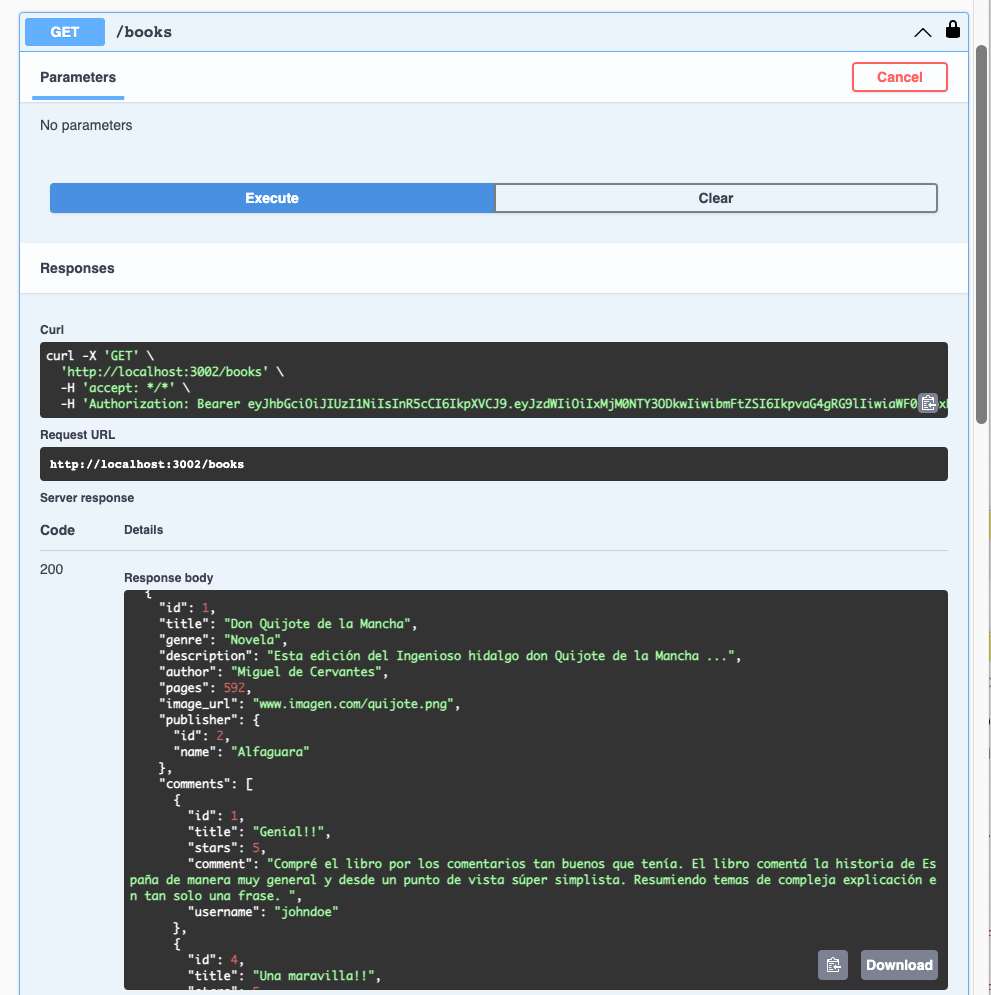
A continuación modificamos el servicio de comentarios para que cargue el libro al recuperar un comentario. Se trata de incluir la relación book en los métodos find y findOne de comments.service.ts.
comments.service.ts...
@Injectable()
export class CommentsService {
...
async findAll(): Promise<Comment[]> {
return this.commentsRepository.find({ relations: ['book'] }); (1)
}
async findOne(id: number): Promise<Comment> {
return this.commentsRepository.findOne({
where: { id },
relations: ['book'], (2)
});
}
...
}| 1 | Carga del libro asociado al recuperar los comentarios |
| 2 | Carga del libro asociado al recuperar un comentario |
Si ahora recuperamos los comentarios con el endpoint GET /comments vemos que ya se incorpora el libro a cada comentario.
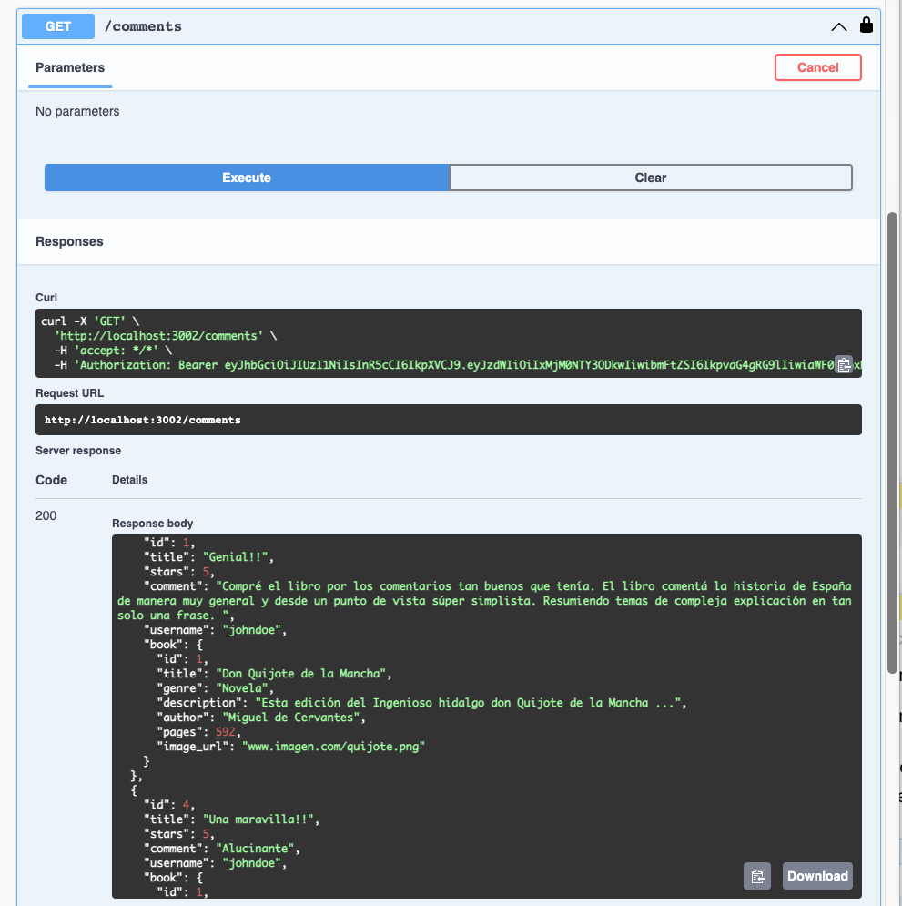
7.3. Creación de la relación entre Book y Keyword
Entre las entidades Book y Keyword hay una relación M:N. Podemos hacer la relación unidireccional o bidireccional. En este tutorial la haremos bidireccional para que podamos mostrar las palabras clave de un libro así como ver los libros asociados a una palabra clave.
7.3.1. Modificación de las entidades
Comenzamos añadiendo los cambios a las entidades. Lo haremos en dos pasos:
-
Añadir los campos a cada entidad.
-
Añadir a cada entidad los decoradores de las relaciones.
Tal y como hemos comentado, lo hacemos en dos pasos porque los decoradores usan los nombres de campo del otro extremo de la relación. Por tanto, para no provocar errores durante la creación de las relaciones definiremos primero los campos para poder referenciarlos al crear las relaciones en el segundo paso.
|
En relaciones unidireccionales sólo se crea el campo y el decorador de relación en una entidad. |
Añadir los campos a cada entidad.
A continuación se muestran los cambios introducidos en la entidad Book para añadir un nuevo campo keywords, cuyo tipo es Keyword[].
book.entity.ts...
import { Keyword } from '../../keywords/entities/keyword.entity'; (1)
@Entity()
export class Book {
...
@OneToMany(() => Comment, (comments: Comment) => comments.book)
comments: Comment[];
keywords: Keyword[]; (2)
}| 1 | Importación de la entidad Keyword |
| 2 | Creación del campo keywords |
A continuación se muestran los cambios introducidos en la entidad Keyword para añadir un nuevo campo books, cuyo tipo es Book[].
keyword.entity.tsimport { Entity, PrimaryGeneratedColumn, Column } from 'typeorm';
import { ApiProperty } from '@nestjs/swagger';
import { Book } from '../../books/entities/book.entity'; (1)
@Entity()
export class Keyword {
@ApiProperty({ example: 99 })
@PrimaryGeneratedColumn()
id: number;
@ApiProperty({ example: 'NestJS' })
@Column()
keyword: string;
books: Book[]; (2)
}| 1 | Importación de la entidad Book |
| 2 | Creación del campo books |
Por ahora, ninguno de las campos introducidos en las entidades Book y Keyword tienen efecto sobre la base de datos. Esto se debe a que ni han sido decorados con @Column() ni con ninguna relación. Por ahora, son sólo campos de la clase, pero no han pasado a la base de datos.
Añadir los decoradores de relación a cada entidad
A continuación se muestran los cambios introducidos en la entidad Book para añadir la relación M:N con Keyword.
book.entity.ts...
import { Keyword } from '../../keywords/entities/keyword.entity';
@Entity()
export class Book {
...
@OneToMany(() => Comment, (comments: Comment) => comments.book)
comments: Comment[];
@ManyToMany( (1)
() => Keyword, (2)
(keyword: Keyword) => keyword.books, (3)
)
@JoinTable() (4)
keywords: Keyword[];
}| 1 | Decorador para la relación M:N |
| 2 | Definición del tipo (del otro extremo) de la relación |
| 3 | Definición de la propiedad inversa |
| 4 | Decorador para indicar nombre de la tabla M:N creada, nombres de columna, … |
Para la definición de la propiedad se establece un objeto (keyword) de la entidad del otro extremo y se indica el campo que establece la relación inversa (keyword.books).
Al guardar los cambios en la entidad, se habrá creado una nueva tabla en la base de datos, ya que en relaciones M:N se crea una tabla nueva para la relación formada por la unión de las claves de entidades que participan en la relación(Book y Keyword).
A continuación se muestran los cambios introducidos en la entidad Keyword para añadir la relación M:N con Book.
keyword.entity.tsimport { Entity, PrimaryGeneratedColumn, Column, ManyToMany } from 'typeorm';
import { ApiProperty } from '@nestjs/swagger';
import { Book } from '../../books/entities/book.entity';
@Entity()
export class Keyword {
@ApiProperty({ example: 99 })
@PrimaryGeneratedColumn()
id: number;
@ApiProperty({ example: 'NestJS' })
@Column()
keyword: string;
@ManyToMany( (1)
() => Book, (2)
(book: Book) => book.keywords, (3)
)
books: Book[];
}| 1 | Decorador para la relación M:N |
| 2 | Definición del tipo (del otro extremo) de la relación |
| 3 | Definición de la propiedad inversa. |
Para la definición de la propiedad se establece un objeto (book) de la entidad del otro extremo y se indica el campo que establece la relación inversa (book.keywords).
7.3.2. Modificación del DTO
En este paso se modifican los DTO afectados. Para el caso de las palabras clave habrá que modificar el DTO create-book.dto.ts para añadirle a un libro las palabras clave. Este DTO se usará tanto para la creación de nuevos libros como para la modificación de libros existentes. En cualquier caso, el valor introducido para la palabra clave deberá ser un objeto con el campo id y el identificador de la palabra clave. Por tanto, la palabra clave deberá existir previamente antes de asociarla a un libro.
create-book.dto.ts...
export class CreateBookDto {
...
@ApiProperty({ example: { id: 1 } })
readonly publisher: Publisher;
@ApiProperty({ example: [{ id: 1 }, { id: 2 }] }) (1)
readonly keywords: Keyword[]; (2)
}
| 1 | Ejemplo de identificadores de palabras clave de un libro |
| 2 | Nuevo campo para el DTO |
A continuación introduciremos un nuevo libro pasándole como valor de keyword las dos existentes ([{"id": 1}, {"id": 2}]).
{
"title": "Nest.js: A Progressive Node.js Framework (English Edition)",
"genre": "Desarrollo web",
"description": "JavaScript frameworks go in and out of style very quickly as web technologies change and grow. Nest.js is a good starting point for many developers that are looking to use a modern web framework because it uses a language that is very similar to that of the most used language on the web to this day, JavaScript...",
"author": "Jay Bell",
"pages": 350,
"image_url": "www.imagen.com/nestjs.png",
"publisher": {
"id": 1
},
"keywords": [
{
"id": 1
},
{
"id": 2
}
]
}Tras la inserción vemos que el servidor responde correctamente mostrando el código de estado HTTP de la creación del libro y devuelvel el libro creado con el nuevo identificador generado por la base de datos.
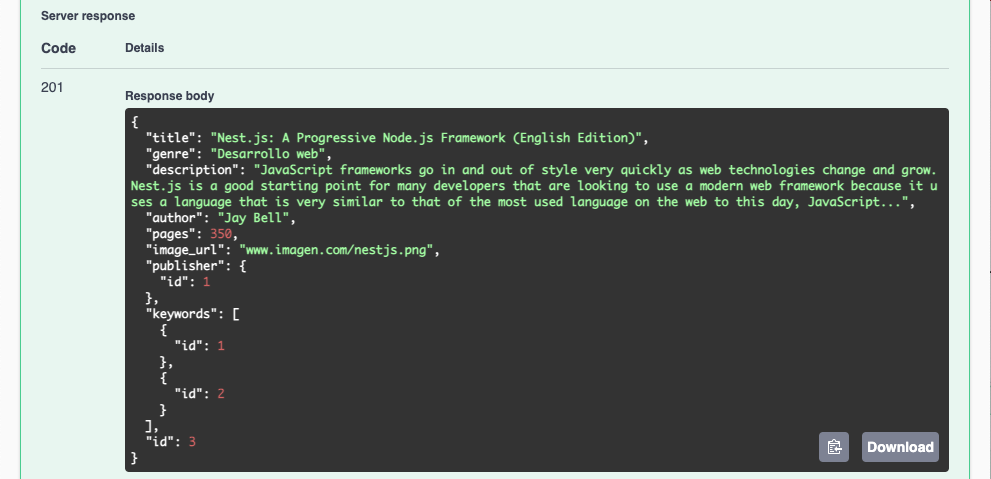
Del mismo modo, podríamos modificar un libro existente para añadirle palabras clave. Habría que usar el endpoint PATCH /books/{id} y pasarle como body el array de objetos palabras clave que se le quieren asignar.
Sin embargo, si recuperamos los libros con el endpoint GET /books veremos que aparece el libro, pero sin las palabras clave. Del mismo modo, si obtenemos las palabras clave, vemos que los aparece el libro que tiene esas palabras clave. En la sección siguiente veremos cómo modificar books.service.ts para que devuelva las palabras clave al recuperar un libro.
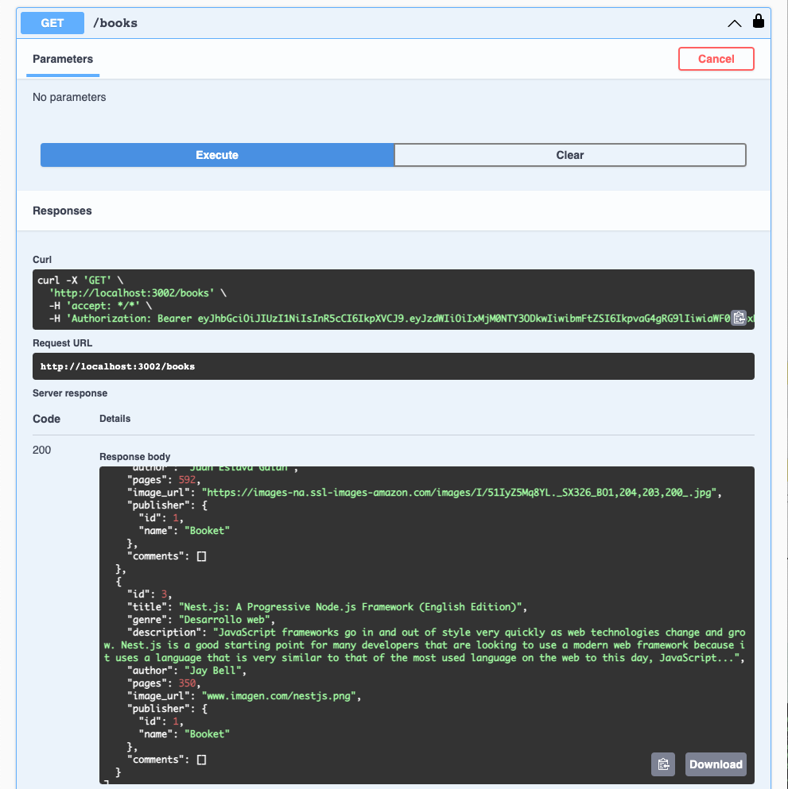
7.3.3. Modificación de los servicios para que devuelvan los datos relacionados.
Tal y como comentamos anteriormente, TypeORM permite que a la familia de métodos find se le pase un elemento relations configurando un array de relaciones para indicar las entidades relacionadas que se deberían cargar. En nuestro caso tendremos que hacer modificaciones en:
-
El servicio de libros para que muestre las palabras clave al recuperar los libros.
-
El servicio de palabras clave para que se muestren los libros asociados a una palabra clave.
Veamos cómo hacerlo.
Comenzaremos modificando el servicio de libros para que cargue las palabras clave al recuperar un libro. Se trata de incluir la relación keywords en los métodos find y findOne de books.service.ts.
books.service.ts...
@Injectable()
export class BooksService {
...
async findAll(): Promise<Book[]> {
return this.booksRepository.find({
relations: ['publisher', 'comments', 'keywords'], (1)
});
}
async findOne(id: number): Promise<Book> {
return this.booksRepository.findOne({
where: { id },
relations: ['publisher', 'comments', 'keywords'], (2)
});
}
...
}| 1 | Carga de las palabras clave relacionadas al recuperar los libros |
| 2 | Carga de las palabras clave relacionadas al recuperar un libro |
Si ahora recuperamos los libros con el endpoint GET /books vemos que ya se incorporan las palabras clave a cada libro.
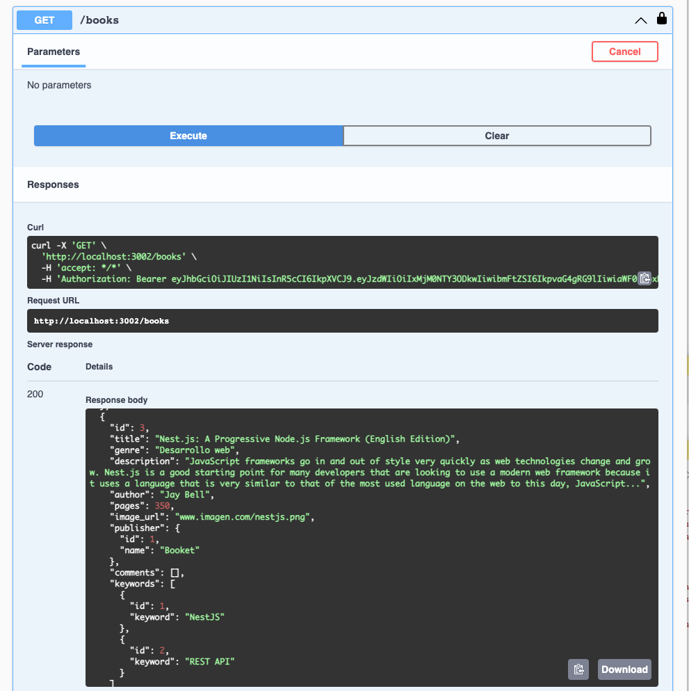
A continuación modificamos el servicio de palabras clave para que cargue los libros asociados al recuperar una palabra clave. Se trata de incluir la relación books en los métodos find y findOne de keywords.service.ts.
keywords.service.ts...
@Injectable()
export class KeywordsService {
...
async findAll(): Promise<Keyword[]> {
return this.keywordsRepository.find({ relations: ['books'] });
}
async findOne(id: number): Promise<Keyword> {
return this.keywordsRepository.findOne({
where: { id },
relations: ['books'],
});
}
...
}| 1 | Carga de los libros asociados al recuperar las palabras clave |
| 2 | Carga de los libros asociados al recuperar una palabra clave |
Si ahora recuperamos las palabras clave con el endpoint GET /keywords vemos que ya se incorporan la lista de libros asociadas a cada palabra clave.
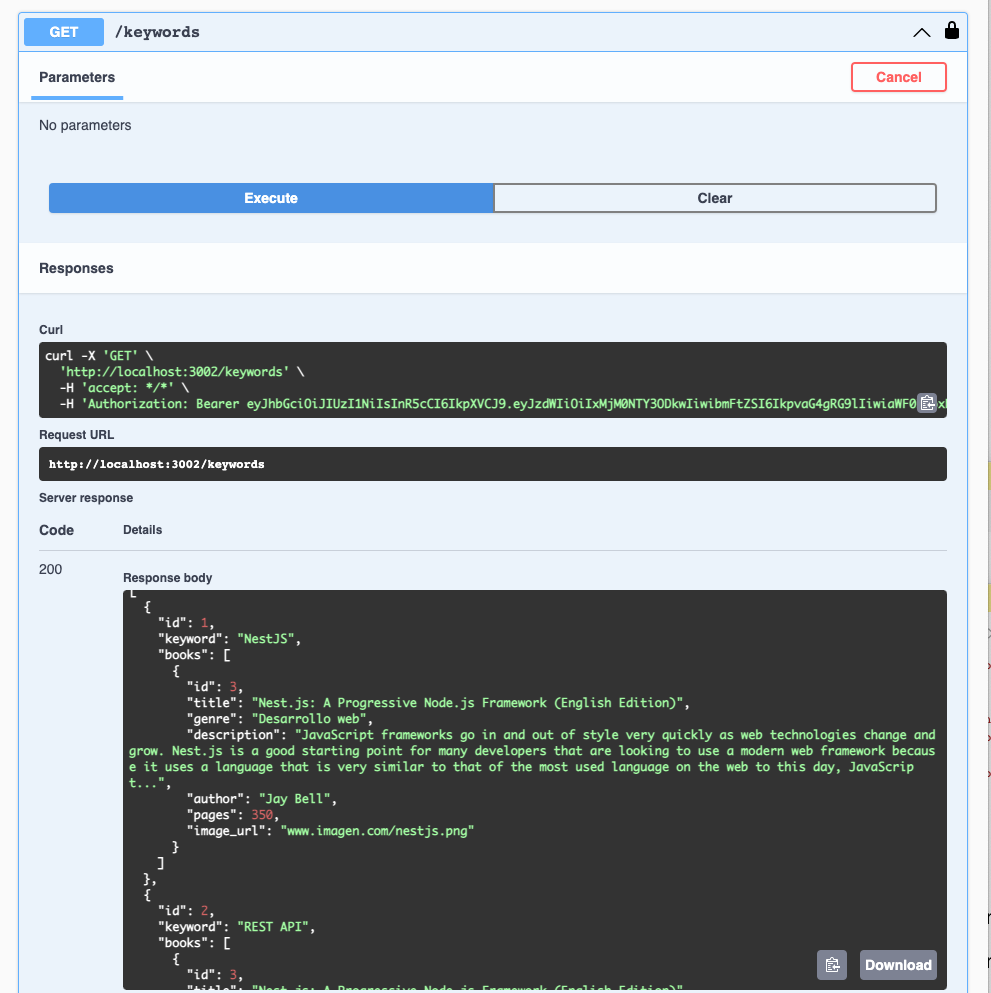